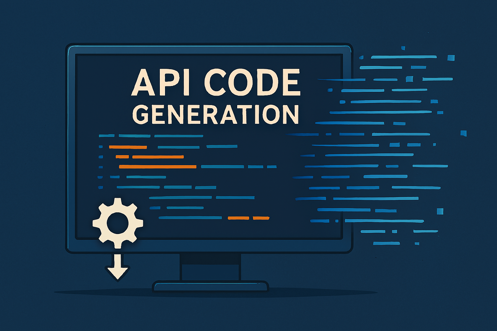
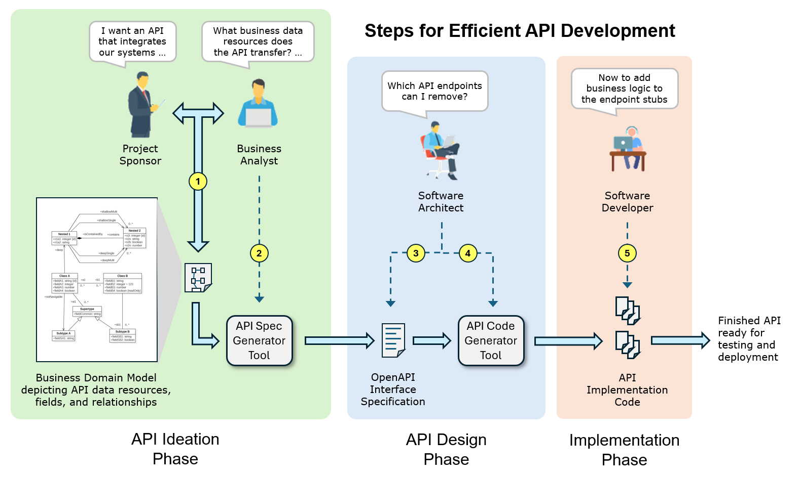

REST API Generator
for Rapid Creation of
REST API Specifications and Code
API Development Best Practices
A best practice for REST API development is to use a contract-first approach to define the API's interface between a business system and its clients before any implementation code is written. A well-defined contract acts as a single source of truth improving communication between stakeholders including product owners, designers, developers, and consumers. Key benefits include early alignment on the API's functionality, structure, and operation as well as consistency across systems.
An important first step in defining an API contract is to create a business domain model. A business domain model is a conceptual blueprint of an organization's problem space identifying the key business concepts (entities), their attributes, and their relationships to other entities. It provides a shared vocabulary for business stakeholders and technical teams, bridging the gap between business requirements and technical implementation. The business domain model is a key design artifact defining the API's interface between a system and its clients from a business perspective, and thus serves as the foundational blueprint for designing the API's client interface contract.
An API's client interface contract is a formal specification defining how client applications interact with the API It consists of a set of rules outlining the expected behavior, structure, and communication protocols between the API provider (server) and the API consumer (client). API interface specifications are typically written using the OpenAPI documentation standard. An OpenAPI spec enables both humans and machines to understand and interact with an API without needing to see its underlying implementation code. An OpenAPI spec consists of detailed JSON code specifying the API's endpoints, functionality, request parameters, response data, and data schema formats. As such the spec serves as a shared contract for stakeholders ensuring that agreement has been reached regarding the API's resources, fields, error shapes and constraints, thus reducing rework and scope creep. Once the specification has been created API consumers can start work on integrating the API interface into client systems while API developers work on implementing the API's backend functionality.
How does the REST API Generator save time and money?
Although developers can write OpenAPI specifications manually, doing so is a laborious process typically taking several weeks or longer to complete. OpenAPI specifications for non-trivial APIs can easily require thousands of lines of detailed JSON code for specifying the various API endpoints, request formats, response formats, success/error status codes, and domain model schemas (e.g., see API example). However, by using a contract-first design approach based on a business domain model coupled with REST API endpoint patterns, tools exist that can read the graphical business domain models to automatically generate the API's OpenAPI specification and skeleton implementation code.
The REST API Generator is one such tool providing two important capabilities to greatly reduce API development effort. First it transforms a business domain model expressed as a UML class diagram into an API interface specification documented using the OpenAPI standard. Second, the REST API Generator reads the API's OpenAPI specification to generate code implementing the API's skeleton infrastructure. The skeleton implementation is a fully functional API that can receive requests from the client and return default responses but contains stubs for the business logic. The API skeleton code provides API developers with an initial "quick start" code base, thus significantly reducing the time and effort required to develop a REST API.

In short by using the REST API Generator development activities that used to take weeks to perform manually can now be accomplished automatically in a matter of minutes. Instead of developers spending time to manually create API specifications and write API boilerplate code they can now focus on implementing the API's business logic to more quickly realize the API's business value proposition.
API Development Tooling
The tools comprising the REST API Generator are: